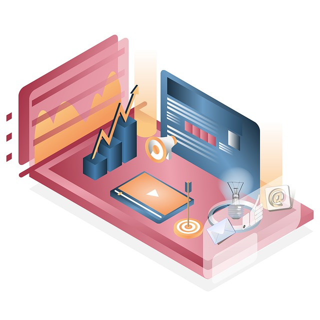

Good email marketing is all about personalization – if you don’t put the right message in front of your users at the right time then the odds are high they won’t even open it.
Enter triggered emails.
Triggered emails are a way to tailor your emails to different customers based on where they are in the customer lifecycle journey.
Unlike generic drip campaigns, triggered email campaigns start with user interactions. They allow you to send your customers super-relevant, super-timely messages based on how they interact with your website.
In this post, we’ll be helping you to do the same by sharing exactly what triggered emails are, how we set them up (and how you can too), and the tools we use to deliver them.
Let’s get started!
What are trigger emails?

Trigger emails are automated, conditional, and contextual emails (or email sequences) that are sent in response to specific actions/behaviors. These actions might include joining your mailing list, making a purchase, viewing a specific page, or any number of other things!
The premise behind it is simple: If a user does X, send them Y.
It works like this:
- You create different emails or email sequences that are laser-targeted to different customer segments
- You set up conditions based on customer actions to trigger those emails.
- Whenever those conditions are met by a customer, they receive an email to their inbox with a timely, relevant message.
The reason trigger emails work so well is that different customers will respond better to different types of emails depending on where they are in your sales funnel.
For example, let’s say a customer has just bought a product on your website. They’re now in the post-purchase stage of the customer journey, so the goal with that user is no longer to nurture them towards making a purchase.
Instead, the focus switches to ensuring customer satisfaction and earning return business. As such, you might set up a triggered email sequence to send them a confirmation email, product support/guidelines, or recommendations for other related products.
This is a very simple example of a triggered email campaign, but there are literally endless use cases and combinations.
In this post, we’re going to share some of our favorites.
Before you get started
In order for these tactics to work, you’re going to need emails – while growing your list is outside of the scope of this guide, this is a good place to start.
Types of triggered email campaigns
Here are some of our favorite types of trigger-based email campaigns and how we use them to improve user experience, increase conversions, and offer timely support.
Number of website visits

The number of times a user visits your website is a good indication of how interested they are in what you have to offer, so it makes sense to use this to tailor your message to different segments of your audience based on how interested they are.
For example, if a user visits your website twice a week, it’s probably a sign that they’re responding positively to your website or services, so you might want to email them more frequently than someone who has only visited your website once.
How to use this:
A big use case for this trigger is increasing email frequency – if a non-customer is browsing more frequently then we make sure to email them regularly and maybe bump up the number of messages they get per week.
On the other hand, if a customer is back browsing the site, you might try alerting your customer support team to reach out directly to see if we can offer any assistance.
Page or blog category deep dive
Another way to use triggered emails is to send your users more of the specific kind of content that they’re interested in. You can determine what they’re interested in based on how they’re consuming content on your website.
Most websites organize their posts and pages via ‘categories’ that help link topics together. For example, the Jarvee blog uses categories like Facebook Marketing, Instagram Marketing, SEO, Sales Tips, etc.
The idea is that if a user is spending an increased amount of time in a certain category, you want to nurture that and send them more of what they’re interested in.
How to use this:
To illustrate how we use this trigger, let’s look at 2 different examples:
- A user reads 3+ articles from the same blog category – in this case, you should consider adding the user to an email sequence that sends them some of your most-read posts on that topic, invitations to download any relevant ebooks, and any case studies you might have from our real customer.
- A user browses our product page 2+ times – here, you can add the user to a sequence where we share detailed product information or success stories from customers and an invitation to connect with your support for more help.
Pro tip: If you don’t have a blog or use categories, you can take the same approach with the help of metrics like time spent on a page or pages viewed in a session.
Cart abandonment
Cart abandonment emails are a classic example of triggered email and should be considered essential for any eCommerce store.
The average cart abandonment rate across industries is around 70%. This means more than two-thirds of your customers leave the products they added to their cart and close the page before completing the checkout.
You can reduce that cart abandonment rate substantially by setting up triggered emails so that when a user abandons their cart, they’re automatically sent an email prompting them to complete their purchase.
The most effective cart abandonment emails provide an incentive for the customer to complete the purchase, like a time-limited discount or exclusive offer. You can also remind them what they’re missing out on by including pictures and descriptions of the products they left in their cart.
It’s important to get the timing right for your cart abandonment emails. If you leave it too late, the customer might have already made the purchase elsewhere.
How to use this:
A good place to start is by following the advice of CRO experts Convertica and use a 3 email sequence for cart abandonments. The first is sent 1hr after abandonment, the 2nd a day after, and the 3rd is sent 3 days after.
Pro tip: if you’re offering coupons in these abandonment emails, you can ‘jump the queue’ by deploying an exit-intent popup that offers the same. Make sure to test the emails against the popup and stick with what works best!
Welcome back

Another popular type of triggered email is the welcome back email.
You can set up your campaign so that when a user visits the site after a prolonged hiatus, it automatically sends them a ‘welcome back’ email to bring them up to speed on new content, products, sales, etc.
The trick with this one is not to be too specific with your messaging – not everyone is crazy about (or understands) being tracked on the internet so make sure to avoid subject lines like “Welcome back, Quincy – we haven’t seen you in 43 days!”.
How to use this:
Start by splitting returning uses into 2 categories: customers and non-customers. If they are a customer we don’t send anything at this time and instead defer them to the aforementioned “Page or blog category deep dive” sequence to see how we might serve them better.
Non-customers get a basic “Here’s what you missed” email with new content, product updates, and a unique coupon to encourage conversions.
Lead conversion
Anyone who opts in or signs up for something on your site should always get an automated email.
Full stop.
Other than post-purchase, this is the best chance you have at getting a user to open an email so it’s important to send something quickly.
How to use this
The approach to using this is simple – you can use various ebooks and digital downloads on your site that add users to relevant email sequences. The download is emailed immediately after conversion and the remaining emails begin the next day (a good goal is to send between 3-5 emails in as many days).
Where to start with trigger emails
If your company already relies on email marketing then it’s likely you already know how to set up and organize most of these campaigns.
However, if you’re just getting your feet wet in the email marketing pool, we have a few tips on how to get up and running with your first campaign.

Sign up for an email marketing platform
The first thing you’ll need is an email marketing platform. An email marketing platform is essential for triggered email campaigns as it allows you to store and segment the subscribers on your mailing list based on user interactions, and then create and launch email sequences targeted towards those different segments.
Popular email marketing platforms include ActiveCampaign and Mailchimp.
Our advice here is to base your choice on which platform has the best support and documentation – the features are going to be quite similar so prioritize a solution that makes it easy to get up and running.
Set up user tracking on your website
In order for the triggers to fire, you need to be able to monitor users when they are on your site. The good news is that most platforms make this easy and provide a short bit of code to add to your site – your developer should be able to make quick work of it.
Measure your results
Once you’ve launched your triggered email campaign, it’s important to measure the results so you can see what’s working. Set up UTMs and email tracking so that you can measure important KPIs like click-through rates, open rates, and revenue.
If your company uses Google Analytics then the place to start is the Campaign URL Builder – it lets you add identifiers to links you send in emails so you can link them back to events and actions on your website.
Carefully analyze the results of your campaign to get an idea of how users are responding to your emails and be prepared to reevaluate if you’re not seeing the kind of results you expect.
Our advice is to pick 1 campaign and focus your energy on it – work on getting it right and then move on to another.
About the Author
Quincy is part of the marketing team at Mira, a company that makes it easy for women to track hormones, monitor their fertility, and predict ovulation. You can learn more on their Facebook page.
Leave a Reply